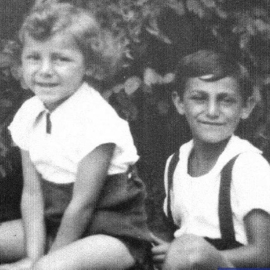

Portrait d’archive
Maurice Weinberg (S ?)
Maurice WEINBERG (S ?)
Maurice WEINBERG est né le 05/02/1926 à Paris en France.
Rassemblé à Lyon, il est déporté à Auschwitz le 02/09/1943 par le convoi n°59. Survivant ? (AMEJD 11ème).
Dernière adresse connue : Rue Tannerie 18370 (Chateaumeillant)
Nom : WEINBERG
Prénom(s) : Maurice
Date naissance : 05/02/1926
Âge (ans) : 17
Lieu naissance : Paris
Pays ou département : Seine
Lieu rassemblement : Lyon
Dernière adresse : Rue Tannerie
Ville : Chateaumeillant (Cher)
Code postal : 18370
N° Convoi : 59
Date déportation : 02/09/1943
Informations diverses : École primaire de garçons 12, rue Titon, Paris 11ème. Tailleur. Arrété à Ambérieu-en-Bugey (01). Déporté à Auschwitz par le convoi 59 (avec Claude (21/03/1938, Paris), Emile (13/01/1904, Metz) et Szmul (09/06/1916, Varsovie). Transféré à Dachau. Survivant ?
Lieu de déportation : Auschwitz
Lieu de départ : Drancy
Nombre total de déporté·e·s du convoi : 1000
Gazé·e·s à l'arrivée : 662 (66,2 %)
Survivant·e·s en 1945 : 21 (2,1 %)